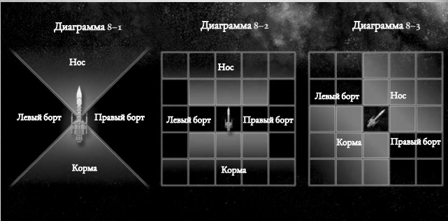

Космические бои
Огонь, разгерметизация и другие опасности
Численность и Боевой Дух экипажа
Космические путешествия вне боя
Полет в Далёкие Пустоты

Глава VIII: Космические корабли
Комическое сражение – это ужасающее событие. Массивные батареи макро-орудий, запускающие снаряды и боеприпасы, мчащиеся через пустоту торпеды размером с жилой блок, и корабли, сгорающие в пламени или взрывающиеся с яростью новой звёзды. Если пустотные щиты подведут или бронированная обшивка не выдержит, тысячи жизней окажется оборвётся во мгновение.
Однако, будут времена, когда у вольного торговца не будет иного выбора, кроме как выкатить орудия и приготовиться к бою. В конце концов, они с командой не единственные, кто жаждет галактических богатств, и чтобы добиться своего, им придётся драться за них.
Космический бой в Rogue Trader проводится схожим образом с обычным боем. Космические путешествия как правило проходят в Повествовательном Времени. Другие ситуации, такие как уклонение от столкновения с астероидом в последний момент, МИ лучше всего разделять на стандартные Ходы и Раунды. Однако, некоторых ситуациях – в особенности сражения кораблей – требуется небольшое дополнение к методу Структурного Времени (см. стр. 266).
Космическое военное дело сильно отличается от ближней, персональной борьбы рукопашной схватки и перестрелок на близкой дистанции. Огромные боевые корабли могут целыми днями сражаться со своими противниками и часами маневрировать с тем чтобы занять позицию для одного опустошительного бортового залпа. По этой причине, МИ следует делить космическое сражение на Стратегические Раунды и Стратегические Ходы. Хотя они работают также как Раунды и Ходы Стратегического Времени, промежутки времени, которые они отображают, дольше.
Стратегический Раунд длится примерно 30 минут в течении которых каждый корабль, вовлечённый в происходящее, делает Стратегический Ход. Каждый Стратегические Ходы накладываются друг на друга, так что действия каждого корабля происходят примерно одновременно. Однако, в игровых терминах, каждый корабль действует в боевом Порядке Инициативы (см. ниже).
Стратегический Раунд завершается, когда каждый участник боя завершил свой Стратегический Ход.
Когда начинается Раунд космического боя, МИ и игроки должны пройти несколько шагов, чтобы определить, что происходит. Эти шаги совпадают с теми, которые надо пройти в начале обычного боя, а разница обозначена ниже.
Конечно возможно, что один корабль застанет другой врасплох. Так как Стратегический Раунд длится полчаса, очень маловероятно, что даже удивлённая команда будет вообще неспособна ответить. Однако, атакующий может суметь нанести несколько калечащих ударов в то время как защищающаяся команда старается подготовить корабль к бою. Информация о эффектах внезапности представлена во врезке.
В начале боя, капитан каждого корабля бросает 1к10 и прибавляет бонус Обнаружения своего корабля (разряд десятков характеристики Обнаружение). Бонусы, применяемые к инициативе персонажа в Структурное Время (обычный бой) не используются, в остальном Инициатива в космическом бою работает также как и в обычном бою (см. cтр. 269).
Начиная с корабля с наивысшим броском Инициативы, каждый корабль выполняет Стратегический Ход, во время которого выполняет действие Движения и действие Стрельбы. Игроки также могут выполнять Длительные Действия.
Когда каждый корабль сделал свой Стратегический Ход, Стратегический Раунд заканчивается. Продолжайте проводить последующие Раунды, пока МИ не решит, что бой закончен.
Космические сражения в Rogue Trader – это абстрактное отражение столкновений звездолётов. Это было сделано для того, чтобы игра оставался сравнительно простой: в конце концов, это игра не только о боях кораблей.
Правила написаны так, чтобы игроки могли использовать обычную положение сетчатую карту для ролевых игр. Это позволяет игрокам и МИ немедленно поняьб относительное положение всех участников боя. На многих пустых тактических картах даже можно писать с помощью маркеров, так что МИ сможет отмечать пояса астройдов, планеты и другие звездные феномены. Простейший способ использовать тактическую карту, это обозначить что каждый квадрат означает расстояние в одну ПЕ. Жетоны или игровые фигуры можут быть использованы для отображения кораблей - просто обозначьте какая сторона жетона - нос и исходите из этого.
Либо же игроки могут отоказаться от использования тактической кары и просто использовать плоскую игровую доску и рулетку. Один дюйм на рулетки будет равняться одной Пустотной единице.
Если МИ желает то он может использовать свободную, «повествовательную» систему боя.
В этой системе информация вроде расстояния менее важна, так же как и точное положение звездолётов. Например, МИ может объявить, что вражеское судно обходит ближайшую луну затем, чтобы атаковать корабль Исследователей.
Исследователи спрашивают как далеко корабль, и МИ отвечает, что он вне досягаемости, но если они пройдут Серьёзную (+0) Проверку (Пилотирования) + Манёвренность достаточно успешно, они могут подойти на достаточную дистанцию для огня по своим оппонентам. Игроки проходят проверку, и МИ решает, что они достаточно близки для того, чтобы стрелять по своим неприятелям без штрафа.
Эффект неожиданности действует в первый Стратегический Раунд космического сражения. Как и в обычном сражении, основываясь на действиях игроков и НИП, а также окружения, в котором действуют корабли, МИ должен окончательно решить, какие суда взяты врасплох. Вот некоторые руководства, которые стоит принимать во внимание:
Скрытые суда: Неистовство работающего плазменного двигателя почти невозможно скрыть в открытом космосе. Однако, хитроумный капитан может использовать подходящее астероидное поле, туманность или даже планет, чтобы скрыть след своего двигателя. Либо же, корабль может идти Бесшумным Ходом, выжидая в холодной тьме, когда его оппоненты выйдут прямо на него. Надлежащая проверка Внимательности + Обнаружение при помощи следящего оборудования может предупредить о опасности.
Засада и коварство: В некоторых случаях, друг может стать врагом во мгновение. Такие ситуации особо опасны, если притаившийся находится в тесном построении со своей целью. Ему может даже не придётся маневрировать, чтобы цель оказался в пределе его зоны видимости. Хотя это остаётся на усмотрение МИ, умелый оператор сканнера может в последнюю минуту обнаружить подачу энергии в вооружение с помощью Серьёзной (+0) проверки Внимательности + Обнаружение.
Сложные обстоятельства: Корабельные сканеры и обнаружение – это переменчивые устройства, и их легко обмануть звёздными феноменами, такими как солнечный свет, магнитные бури и непредсказуемые изменениями гравитации. Интерференция может быть достаточно мощной, чтобы скрыть приближение нападающих.
Используя это руководство (и любое другое, которое сочтет нужным), в начале сражения МИ определяет, взят ли кто-то врасплох. Любой атакующий, стреляющий по кораблям, Взятым Врасплох, получает бонус +20 к броскам атаки против них, во время первого Раунде боя.
Во время Стратегического Раунда, каждый корабль получает один Стратегический Ход. Как и в обычном бою, в свой ход каждый корабль может выполнять Действия однго из двух типов. В свой ход каждый корабль совершает одно действие Манёврирования и может выполнить одно действие Стрельбы. Один Исследователь может выполнить только одно действие. Любой Исследователь, не выполнявший Действия, может выполнить вместо него Длительное действие (см. стр. 244).
Отдельные персонажи будут выполнять свои действия во время Стратегического Хода корабля. Они не делают броски Инициативы отдельно. В начале каждого хода корабля, игроки (или МИ, если это корабль НИП) определяют какое действие Стрельбы, действие Манёврирования и Длительные действия выполняют игроки и в каком порядке. Все действия (и порядок, в котором они выполняются) должны быть определены в начале Хода звездолёта. Игроки могут исполнять действия в любом порядке, который они выберут, так что Длительное действие может быть выполнено до действия Стрельбы или Манёврирования для того, чтобы обеспечить его бонусом, или же корабли может передвинуться до или после стрельбы.
Обратите внимание: действия часто требуют Соединенной проверки умения, как например проверка Пилотирования (Космический Корабль) + Манёвренность. В конце концов, даже пилоту-асу в определённой степени приходиться полагаться на своё снаряжение. Для проведения таких проверок, прибавьте характеристику корабля, такую как Манёвренность к умению персонажа, такому как Пилотирование. Затем исполните проверку, используя объединенный показатель.
Во время космического сражения, противостоящие корабли могут быть как на расстоянии сотен метров, так и на дистанции в тысячи километров. Последнее гораздо вероятнее: редко бывает так, что канонир корабля может увидеть свою цель невооружённым взглядом.
В космическом сражении, дистанция между кораблями или то, как далеко корабль может передвинуться в свой Стратегический Ход, измеряется пустотными единицами (ПЕ). Дистанция, обозначаемой одной ПЕ умышлено абстрактна и остаётся свободной в отношении трактовки по причине больших масштабов космоса. Однако, неплохо ориентироваться на то что одна ПЕ равна примерно 10 000 километров. Так как даже одна ПЕ отражает значительное расстояние, возможно, что два корабля будут находиться в пределах одной ПЕ. На такой дистанции, космическое сражение становится поистине жестокими, с попытками тарана или даже абордажа.
Обычное космическое сражение начинается, когда все корабли оказываются на дистанции, определённой сценарием и МИ. В бою также могут быть другие феномены, возможно, ближайшая планета или даже обширное астроидное поле (см. стр. 257). В начале сражения, МИ и игрокам следует определить направление, в котором смотрит каждый из кораблей. Это направление, по которому будет двигаться звездолёт, когда будет двигаться прямо вперед.
Когда корабль совершает действие маневрирование он решает передвинуться прямо на число ПЕ, равное его полному показателю Скорости или же половине показателя Скорости. Для корабля это действие по умолчанию, так как звездолёты – это огромные корабли с огромной инерцией у игроков нет возможности просто не передвигать свой корабль. Если звездолёт передвинулся на свой показатель Скорости или на его половину, он может повернуться. Транспорты, рейдеры, фрегаты и другие корабли равного размера (например по Прочности Корпуса и Доступному Пространству) могут повернуться на угол до 90 градусов вправо или влево (в направлении правого или левого борта). Если не указано другое, все другие вместо этого могут поворачиваться на угол до 45 градусов.
Любая версия этого Манёвра (движения на половину или полный показатель Скорости) считается маневром звездолёта по умолчанию, и не требует проверок умения для своего выполнения. Однако, умелый пилот может выполнять более продвинутые Действия Манёврирования для улучшения этого Манёвра. Каждый Манёвр модифицирует (но не заменяет) основное действие Манёвра, упомянутое выше, и за ход может быть выбран только один Манёвр. Пока не определено другое, звездолёт никогда не может поворачиваться более чем на 90 градусов.
Если звездолёт проваливает проверку при выполнении Манёвра, он просто выполняет другую версию Манёвра по умолчанию (двигается вперед на половину своего значения Скорости или на полное значение, а затем может повернуться).
Используется для уменьшения дистанции, на которую корабль должен передвинуться до того, как передвинется. Сперва, корабль решает, двигается ли он на половину, или на полный показатель Скорости. Затем рулевой проходит Серьёзную (+0) проверку Пилотирования (Космический Корабль)+ Манёвренность. В случае успеха, звездолёт может повернуться, после того, как преодолел расстояние на одно ПЕ меньше его показателя Скорости. За каждую степень успеха, он может развернуться пройдя расстояние, ещё на одну ПЕ меньше. Звездолет, должен пройти как минимум одну ПЕ до того, как повернуться. Когда Звездолет повернулся, он должен пройти оставшуюся дистанцию так, чтобы его полное движение равнялось половине или полному показателю его Скорости.
Вполне возможно, что игроки захотят исполнить больше действий, чем игроков в группе. В таком случае, МИ следует помнить, что персонажи игроков командуют кораблём с тысячами членов экипажа. Если игроки хотят, чтобы кто-то из членов экипажа исполнил одно из следующих действий, они могут. В таком случае, МИ делает бросок, чтобы определить, успешно ли действие, учитывая соответствующие характеристики членов экипажа (см. Таблицу 8-9 ниже).
Однако, МИ следует быть осторожным, чтобы не позволять игрокам возложить слишком много задач на НИП. В общем, МИ следует позволять НИП на корабле выполнять три действия за Стратегический Раунд. Либо же, МИ может позволить НИП на борту выполнять число действий равное порядку десятков в колонке умений таблицы Рейтинга Команды НИП. Так, например, Компетентная команда может выполнить 3 Действия, в то время как команда Ветеранов может выполнить 5. Оба варианта рабочие, и МИ следует выбрать один при начале игры.
Игрокам следует помнить, что редко когда члены команды НИП бывают настолько же умелы, как они. Кроме того, МИ следует полагаться на здравый смысл при решении вопросов делегирования заданий НИП и будет лучше, если он потребует от Исследователей выполнять некоторые более важные задачи лично. Смысл в том чтобы держать игроков вовлечёнными в бой, и не сводить всё к деятельности команды и броскам костей.
Таблица 8-9 также может быть использована для создания числовых показателей для экипажей кораблей противников или НИП. Вражеские корабли могут выполнять число Длительных Действий (или других действий, таких как борьба с огнём), равное числу Действий, которые могут выполнять другие суда НИП.
| Таблица 8-9: Рейтинг Команды НИП | |
| Рейтинг Команды | Умения и характеристики |
| Некомпетентная | 20 |
| Компетентная | 30 |
| Первокласная | 40 |
| Ветераны | 50 |
| Элита | 60 |
Используется для изменения дистанции, которую звездолёт должен преодолеть. Сперва, корабль решает, двигается он на половину своей Скорости или на всё Скорость. Затем рулевой проходит Серьёзную (+0) проверку Пилотирование (КК) + Манёвренность. В случае успеха, он может увеличить или уменьшить число ПЕ, на которое двигается корабль, на единицу. За каждую степень успеха, он может увеличить или уменьшить это число ещё на единицу. Звездолет неспособен продвинуться на менее чем 0 ПЕ (звездолёт может остановиться, используя свои тормозные двигатели, но не может двигаться в обратную сторону). Звездолет не может двигаться более двигаться на расстояние, более чем вдвое превосходящее его Скорость с использованием этого Манёвра (только Самый Полный Ход позволяет это)
Используется, когда звездолёт хочет повернуться раньше, при более медленном или быстром движении. Во первых, корабль решает, движется ли он на половину или на полный показатель Скорости. Затем, рулевой проходит Тяжёлую (-20) проверку Пилотирования (Космический Корабль) + Манёвренность. В случае успеха, он может увеличить или уменьшить показатель Скорости, на которые движется корабль на 1 ПЕ, и может повернуться при дистанции на одну ПЕ меньше, чем его показатель Скорости (как выше). Таким образом, каждая степень успеха улучшает бонусы Коррекция Пеленга и Коррекция Скорости. Однако, ограничения обоих Действий Манёврирования действуют.
Используется для кардинального изменения курса. Рулевой проходит Сложную (-10) проверку Пилотирования (КК) + Манёвренность. Успех значит, что звездолёт может повернуться один раз, когда он преодолел половину дистанции, равной показателю Скорости и затем снова развернуться, когда он прошел свою Полную Скорость. Корабль получает штраф -20 к проверке Навыка Стрельбы при ведении огня из корабельных орудий в тот же ход.
Это даёт кораблю шанс убежать из боя, кардинально изменив курс и отключив свои системы, пытаясь скрыться среди просторов пустоты. Этот маневр невозможно выполнить, если звездолёт находиться на расстоянии 8 ПЕ от любого противника. Рулевой проходит Серьёзную (+0) проверку Пилотирования (КК)+ Манёвренность, встречную к Серьёзной (+0) проверке Обнаружения + Внимательность, которую проходят противники в пределах 20 ПЕ. В случае если число степеней отступающего успеха превышают число успехов у преследователей, корабль покидает бой, и не может вернуться в него. Была ли проверка успешна или нет, корабль не может вести огонь из любого вооружения в этот ход.
Когда корабль успешно вышел из боя, он не может атаковать своих оппонентов, пока МИ не позволит обратное. Кроме того, Манёвр Отрыв не может быть использован для инициации Погони в Кильватер. Это происходит потому, что корабль отключает все свои не необходимые системы, включая двигатели, сканнеры и оружия, и делает всё, что только можно, чтобы показать, что его тут нет. Он будет оставаться в таком состоянии в течении нескольких часов или даже дней до того как перезапустит свои системы (в надежде что все остальные уже покинули зону).
Используется для помощи при уклонении от вражеского огня. Рулевой проходит Сложную (-10) проверку Пилотирования (Космический Корабль) + Манёвренность. Успех (и каждая последующая степень успеха) приводит к штрафу -10 ко всей стрельбе направленной против корабля до начала его следующего Хода. В то же время звездолёт получает тот же штраф к собственной стрельбе
После завершения своего Действия Манёврирования, у корабля есть возможность выстрелить из своих орудий. Их каждого Компонента Вооружения можно выстрелить один раз за Стратегический Ход и все Орудийные Компоненты должны стрелять единовременно, хотя и могут стрелять по различным целям. Огонь из Компонента Вооружения может вестись только по цели в его секторе стрельбы Стрельба из вооружения и разрешение урона объясняется дальше в этом разделе (см. стр. 248).
Длительные Действия доступны только персонажам, которые не принимали участия в действиях Манёврирования или Стрельбы в этом ходу. Они отражают другие действия, совершаемые персонажами для того, чтобы помочь кораблю, например, осуществление ремонта, уход за раненными и даже налёты на вражеские корабли.
Заметьте: Модификаторы, перечисленные для проверок умений, могут быть изменены по решению МИ. Хотя каждый персонаж может исполнить только одно Длительное действие за Стратегический Ход, оно может занять, а может и не занять 30 минут, в зависимости от действия.
Персонаж проходит Серьёзную (+0) проверку Внимательности + Обнаружение для того, чтобы просканировать зону вокруг корабля. Если сканирование успешно, МИ следует раскрыть базовую (и важную) информацию о небесных телах, феноменах и кораблях в пределах 20 ПЕ от судна. Если в зоне сканирования находиться судно, идущие на Бесшумном Ходу, оно немедленно обнаруживается. За каждую степень успеха, радиус сканирования расширяется на 5 ПЕ.
Персонаж должен пройти Серьёзную (+0) проверку Техпользования для того чтобы связаться с духом машины и помочь ему в вычислениях. При успехе, персонаж может добавить +5 к Манёвренности или Обнаружению корабля на остаток хода. За каждые две степени успеха, персонаж может добавить дополнительные +5 к той же системе.
Персонаж проходит Сложную (-10) проверку Обмана или Трёпа. В случае успеха, он может повысить Боевой Дух команды на 1к5 за каждую степень успеха на протяжении боя.
| Таблица 8-10: Действия Манёврирования | ||
| Действие | Проверка | Преимущество |
| Коррекция Пеленга | Серьёзная (+0) Пилотирования (КК) + Манёвренность | Повернуться раньше обычного |
| Коррекция Скорости | Серьёзная (+0) Пилотирования (КК) + Манёвренность | Двигаться быстрее или медленнее обычного |
| Коррекция Пеленга и Скорости | Тяжелая (-20) Пилотирования (КК) + Манёвренность | Повернуться раньше обычного, двигаясь быстрее или медленнее обычного |
| Проложить Новый Курс | Сложная (-10) Пилотирования (КК) + Манёвренность | Совершить два поворота за Раунд |
| Отрыв | Встречная Серьёзная (+0) Пилотирования (КК) + Манёвренность | Избежать боя |
| Манёвр Уклонения | Сложная (-10) Пилотирования (КК) + Манёвренность | Вызвать штраф на вражеский огонь |
Персонаж проходит Сложную (-10) проверку Техпользования для того чтобы направить и помочь ремонтным командам. В случае успеха, он восстанавливает один обесточенный, повреждённый или разгерметизированный Компонент. Починка обычно занимает 1к5 часов, однако, время может быть уменьшено на один ход за степень успеха, до минимума в один ход. Срочный Ремонт не может починить уничтоженный компонент.
Персонаж должен пройти Серьёзную (+0) проверку Техпользования, чтобы задобрить двигатели корабля и заставить их работать на пределе. Успех значит, что корабль может продвинуться на дополнительную ПЕ за ход. Каждая степень успеха позволяет увеличить дистанцию ещё на ещё одну ПЕ. Провал на 2 или более степени означает, что корабль тотчас получает критическое попадание Поломка Двигателей, так как двигатели были слишком перенапряжены
Персонаж проходит Серьёзную (+0) проверку Внимательности + Обнаружение для того, чтобы просканировать определённое судно на расстоянии 20 ПЕ от своего судна. Успешное сканирование открывает число Компонентов на борту корабля: Базовый успех: Все Необходимые компоненты за исключением Блоков Авгеров и Пустотных Щитов.
Одна степень Успеха: Все Компоненты Вооружения
Две степени Успеха: Блоки Авгеров, Пустотные Щиты и все связанные с боем Компоненты
Три степени Успеха: Все Компоненты на борту целевого корабля
Это действие уникально, так как может быть исполнено персонажами, уже выполнявшими в этом ходу действие Манёврирования или действие Стрельбы. Персонаж связывается с одним вражеским судном, используя вокссистемы. Он может использовать умения Взаимодействия для того чтобы достичь определённых целей, как, например, с помощью умения Запугивания убедить противника сдаться. Конкретные детали того, как работает это действие, остаются на усмотрение МИ (см. стр. 337 в таблице умений Взаимодействия).
Позволяет персонажу совершить набег на вражеское судно, устроить на нём саботаж и отступить. Персонаж проходит Серьёзную (+0) проверку Пилотирования (КК), пытаясь добраться до вражеского судна в пределах 5 ПЕ, сопровождаемый отрядом налётчиков. проверка может быть модифицирована рейтингом турелей цели (см. стр. 214). Если персонаж провалит проверку, то вынужден вернуться на свой корабль. Если провал составил 4 и более степеней, то его корабль сбит. Персонаж либо выживает, оказавшись в подбитом корабле, либо по решению МИ, умирает.
В случае успеха, он должен пройти встречную Ординарную (+10) проверку Командования против командующего войсками на борту вражеского корабля. В случае успеха сделайте бросок 1к5 по таблице Критических Повреждений дважды и выберите один результат, который применяется к вражескому кораблю плюс 1 очко урона Прочности Корпуса за каждую степень успеха.
В случае провала, его силы вынуждены отступить на абордажный корабль, не сумев вызвать резню.
В неистовстве космического боя бывают отчаянные ситуации, когда единственный оставшийся выход для капитана – это использовать свой звездолёт как оружие. Если звездолёт завершает своё действие Манёврирования в пределах одной Пустотной Единицы от вражеского судна, и его нос направлен на указанное судно, звездолёт может отказаться от своего Действия Стрельбы и, вместо этого, выполнить таранное действие. Рулевой должен пройти Тяжёлую (-20) проверку Пилотирования (КК) + Манёвренность. При успехе, корабль врезается в цель, нанося урон, основанный на его размере корпуса: 1к5 – транспорты и рейдеры, 1к10 фрегаты, 2к5 – лёгкие крейсера и 2к10 – крейсера. Судно добавляет показатель своей носовой брони к общему нанесенному урону. Этот урон игнорирует пустотные щиты. Таранящий корабль получает урон, равный броне защищающегося корабля плюс 1к5 направленный на его носовую броню, также игнорирующий носовую броню. Однако, иногда лучшим образом действия будет врезаться в противника, отправить отряды бойцов и рядовых, и взять его корабль штурмом. Это называется действием абордажа.
Если звездолёт оканчивает действие Манёврирования в пределах 1 ПЕ от цели, он может отказаться от стрельбы в пользу абордажа цели. Рулевой должен пройти Тяжёлую (-20) проверку Пилотирования (КК) + Манёвренность. При успехи, два корабля сталкиваются и начинается абордажное действие. Когда два корабля вовлечены в действие абордажа, никто из них не может исполнять Действия Манёврирования или Стрельбы (что означает, что оба корабля стоят на месте), хотя отдельные персонажи всё ещё могут выполнять Длительные Действия. Корабли сцеплены друг с другом и единственный способ для корабля вырваться – это пройти Тяжёлую (-20) проверку (КК) + Манёвренность в начале своего хода. Если корабль попытался вырваться, и это ему не удалось, он получает штраф -20 к последующей проверке Командования (см. ниже).
Два корабля начинают Стратегический Ход одновременно, понижаясь до последних в порядке инициативы. Во время их ходов, один персонаж с каждого корабля (кто командует корабельными бойцами), проходит проверку Командования. Корабль с большей Численностью Команды получает бонус +10 к проверке Командования персонажа за каждые полные 10 очков разницы в Численности Команды между двумя кораблями. Каждый класс турелей также предоставляет бонус (см. стр. 250).
За каждую степень успеха победителя, он может выбрать оказать одно из следующих воздействий на оппонента. Проигравший может либо потерять 1к5 Численности Команды и получить урон 1к5 Боевому Духу (что отражает, что команда вырезает противника) либо 1 очко урона Прочности Корпусу (что отражает, что команда ставит заряды и наносит столько урона, сколько возможно). Урон Прочности Корпус также отражается в уроне, нанесенном Численности Команды и Боевому Духу как обычно (см. стр. 254). Корабль, который проиграл проверку Командования затем делает бросок к100 и сравнивает его с текущим Боевым Духом. Если бросок равен или ниже текущего Боевого Духа, команда продолжает сражаться. Во время следующего Стратегического Хода, оба корабля снова проходят встречную проверку Командования. Однако, если бросок проигрывающего корабля выше, чем его нынешний Боевой Дух, команда бунтует и сдается захватчикам. Если корабль – это судно НИП – оно сдается. Если это судно Исследователей, перед персонажами встает неумолимый выбор: сдаться своим врагам или постараться приложить все усилия к тому, чтобы сбежать…
У персонажа должен быть Дух Власти (или схожий талант по решению МИ) и он должен пройти Серьёзную (+0) проверку Силы Воли. В случае успеха, он вдохновляет команду и снижает урон Боевому Духу на 1, плюс 1 за каждую степень успеха. Держаться стойко! может снять только тот урон Боевому Духу, который корабль получил в прошлом ходу
Персонаж проходит Сложную (-10) проверку Техпользования, целью которой является корабль, расположенный в 10 ПЕ от его судна. В случае успеха, жертва не может использовать вокс-передатчики или другие технологии, необходимые для коммуникации с другими кораблями. Психическая связь – такая как астропаты – остаётся не затронута. За каждую степень успеха, радиус Глушения Коммуникаций расширяется на одну ПЕ.
Персонаж проходит Серьёзную (+0) проверку Внимательности + Обнаружение для того чтобы использовать корабельные аугеры и вычислить наилучший угол для стрельбы по вражескому кораблю. При успехе он добавляет бонус +5 к проверке Навыка Стрельбы для стрельбы из одного Компонента Вооружения в этот ход. Каждые две дополнительные степени успеха добавлют +5 к той же проверке.
Персонаж должен пройти Серьёзную (+0) проверку Командования с тем чтобы организовать и вооружить часть команды. В случае успеха он может добавить +10 к любой встречной проверке Командования, которую он проходит против высаживающегося противника во время последующих ходов боя, +5 за каждую степень успеха. Хотя персонажу не требуется проходить дополнительные проверки в последующие ходы, он должен заниматься сплочением защитников покуда хочет сохранить этот бонус.
Персонаж проходит Серьёзную (+0) проверку Запугивания или Обаяния. В случае успеха, он может бонус +5 к проверке Навыка Стрельбы при использовании Компонента Вооружения, к действию Срочный Ремонт или в попытке потушить огонь, сделанной в этот ход. Он может помочь дополнительной проверке Навыка Стрельбы, действию Срочный Ремонт или попытке пожаротушения за каждые три степени успеха.
В некоторых ситуациях, вместо того чтобы оставаться и сражаться, звездолёт может предпочесть сбежать от противников. Возможно, контрабандист хочет прорвать блокаду кораблей флота, или пират преследует ценную добычу. Возможно, корабль просто хочет сбежать из боя, и его капитан сомневается в своих шансах на успех в отрыве под огнём вражеских орудий. В таких ситуациях, у игроков есть возможность использовать правила преследования в кильватер – бегство и преследование, осуществляемое двумя кораблями, может длиться часами, или даже днями.
Преследование в кильватер может начаться в бою или вне его. Если два корабля не в бою и один убегает, другой корабль может решить преследовать его, начав преследование в кильватер. Если корабли находятся в бою, корабль может покинуть бой, если заканчивает раунд вне дальности орудий вражеских кораблей. В таком случае, он должен пройти Ординарную (+10) проверку Пилотирования (КК) + Манёвренность (при провале, он должен оставаться в бою лишается своего следующего Стратегического Хода). Затем, все другие участники боя имеют возможность начать преследование убегающего судна. Если они принимают это решение, то покидают бой в следующем Стратегическом Ходу, и начинается преследование в кильватер.
Если исследователи преследуют, то преследование в кильватер проходит также как Испытание Исследования (см. стр. 300), при котором различные Исследователи используют проверки определённых умений для того, чтобы получить число степеней успеха, которое должно равняться предопределённой сумме необходимой для успешного завершения погони. Общая сумма, требуемая для успеха, основана на классе корабля, который преследуют Исследователи.
Транспорт, Крейсер: 3 Степени Успеха
Лёгкий Крейсер, Фрегат: 5 Степеней Успеха
Рейдер: 7 Степеней Успеха
Если Скорость преследуемого корабля превышает Скорость преследующего: +2 Степени Успеха
Если Скорость преследующего корабля превышает Скорость преследуемого: -2 Степени Успеха
Если погоня проходит среди астероидов, в туманности или другой ухудшающей видимость среде: +1 Степень Успеха
Для их достижения, Исследователи должны проверять следующие умения так, как если бы они участвовали в Испытании Исследования: Техпользование, Пилотирование (КК), Командование и Внимательность (по решению Мастера Игры могут быть использованы другие умения, и требуемый успех может различаться). Как и в случае Испытаний Исследования, каждый Исследователь должен единожды пройти проверку этих умений, с модификатором сложности по умолчанию равным Серьезно (+0). Успех при проверки умения уменьшает последующую сложность на одну ступень. Степени успеха добавляют равное число степеней успеха для успешного завершения преследования в кильватер. С другой стороны провал проверки умения делает последующие проверки на одну степень сложнее, а каждая степень провала убирает одну степень успеха из общей суммы.
Если Исследователи смогли набрать достаточное число степеней успеха для завершения преследования в кильватер, то они заставляют свою жертву повиноваться. Убегающий корабль может сдаться, или же начинается космическое сражение в котором корабль отчаянно пытается бороться со своим преследователям (по правилам космического сражения). В случае провала, их добыча сбегает в просторы пустоты. Конечно, возможно, что те, кого преследуют – это Исследователи. В таком случае, используются те же правила (Исследователи также должны набрать определённое число степеней успеха для того чтобы сбежать от своих преследователей), с некоторыми незначительными изменениями. Число степеней успеха теперь устанавливается по преследующему кораблю, что значит, что Исследователям также придётся предпринимать попытки проверок умений. Кроме того, если Исследователи (те, кого преследуют имеют более быстрый корабль, Испытание становится проще, а если их корабль медленнее, то, наоборот, сложнее (обратите штрафы и преимущества, описанные выше). Помимо этого, если Исследователи используют в своих целях звёздные феномены, например, пролетая через поля астероидов или туманности, Испытание становится на одну степень легче. В случае успеха Исследователей, они те, кто сбежал в просторы космоса, и, если им не повезло, то перед ними встает сложный выбор: бежать или сражаться.
В любом варианте преследования в кильватер, время, которое требуется для его завершения, примерно равно двум часам за каждую степень успеха, требующуюся для его завершения. Время будет потрачено вне зависимости от того, успешно преследование или нет.
Помните, что когда происходит Преследование в Кильватер, оба корабля остаются в пределах видимости, но вне досягаемости орудий друг друга.
Персонаж проходит Сложную (-10) проверку Медики. В случае успеха, снизьте весь урон Численности Команды на 1, плюс 1 за каждую степень успеха до минимума в 1. Триаж может отменить только урон Численности Команды, нанесённый в прошлый Ход.
| Таблица 8-11: Длительные Действия | ||
| Действие | Проверка | Преимущество |
| Активная Авгурия | Внимательность + Обнаружение | Сканировать зону |
| Помощь Духу Машины | Техпользование | Бонус к Обнаружению или Манёвренности |
| Дезинформация | Обман или Трёп | Поднять Боевой Дух |
| Срочный Ремонт | Техпользование | Ремонт повреждённых, разгерметизированных или обесточенных Компонентов |
| Самый Полный Ход | Техпользование | Получить дополнительное движение |
| Направленная Авгурия | Внимательность + Обнаружение | Детальное сканирование цели |
| Переговоры с Противником | умения Взаимодействия | Связаться с другим кораблём |
| Ударил-Отступил | Пилотирование (КК), Командование | Высадиться на вражеском кораблей, нанести повреждения и вернуться |
| Держаться Стойко! | Сила Воли | Снизить урон Боевого Духа |
| Заглушить Коммуникации | Техпользование | Помешать цели отправлять вокс-сигналы |
| Захват Цели | Внимательность + Обнаружение | Бонус к проверкам НС с одним компонентом вооружения |
| Приготовиться к Отражению Абордажа! | Командование | Бонус к проверке Командования против вражеских абордажных действий |
| Навались! | Запугивание или Обаяние | Бонус к различным действиям |
| Триаж | Медика | Снизить урон команде |
Корабль может попытаться избежать обнаружения, передвигаясь Бесшумным Ходом, отключив все системы за исключение необходимых и пытаясь дрейфовать, незамеченным, мимо своего противника. При Бесшумном Ходе, корабль делает Действия Манёврирования как обычно, за исключением того, что Скорость корабля снижена вдвое, а Сложность проверки возрастает на один шаг. Действие Манёврировани по умолчанию требует Ординарной (+10) проверки Пилотирования (КК) + Манёвренность. Если рулевой провалит такую проверку, корабль выполняет маневр как обычно, но какой-то всплеск энергии или всполох двигателя выдаёт его присутствие, и кораблям в зоне досигаемости сенсоров становится известно о нём. Вражеские корабли могут определить корабль на тихом ходу, используя Длительное действие Активной Авгурии (см. выше). Нет нужды говорить, что если корабль открывает огонь из любого оружия, он немедленно обнаруживается.
Вооружение звездолётов в 41м тысячелетии также различно, как и корабли, на котором оно установлено. Лазеры, плазмомёты, макро-орудия, ракетомёты, излучатели мощностью в тераватты и более загадочные орудия, такие как гравитационные кулеврины и гаммаэмитеры, все они могут располагаться по бортам звездолёта. В игровой терминологии, вооружение в Rogue Trader делится на два обширных класса: макробатареи и лэнсы.
Макробатареи составляют основу вооружения большинства кораблей, заполняя борта судна рядами гигантских орудий. Каждое требует для своей работы расчет в десятки, если не сотни, человек. Пускают ли килотонные заряды сквозь пустоту или поджаривают свои цели энергией высокой интенсивности, макробатереи стреляют залпом, который ориентирован на покрытие пространства вокруг цели, с тем, чтобы поглотить её в вихре разрушения и превзойти защиту одним лишь числом выстрелов.
Лэнсы – это редкие и сильные орудия, которые стреляют лучами энергии большой мощности, способными прожигать корпус боевого корабля или разрезать малый корабль надвое. В отличие от макробатарей, лэнсы часто устанавливаются на гигантские башни, где мощные излучатели энергии, которые, фокусируясь, создают мощный титанический луч.
В Rogue Trader, орудия звездолёта – это Дополнительные Компоненты. Каждый Компонент Вооружения необязательно состоит из одного орудия, одна макробатарея, например, может иметь дюжины отдельных макро-орудий, размещённых вдоль бортов. Вместо того, чтобы рассматривать каждое орудие в отдельности, их группируют вместе в единый Компонент Вооружения, который считается одним орудием, способны наносить несколько попаданий при стрельбе. Хотя большинство Компонентов Вооружения определяются как макробатареи или лэнсы, это просто значит, что ониследует общим правилам. Особое орудие может использовать другие правила и уникальные способности.
В Rogue Trader, каждый Компонент Вооружения имеет следующие характеристики:
Сила: Это максимальное число попаданий, которое может быть нанесено вражескому судну макробатареей или лэнсом.
Урон: Это Урон, который наносит каждое попадание
Крит Рейтинг: Это число степеней успеха, которые должны быть у выстрела, чтобы он смог нанести цели критическое попадание.
Сектор Стрельбы: Это определяет, а каком направлении орудие звездолёта может стрелять.
Дальность: Это дистанция стрельбы орудия. Вооружение звездолётов может вести огонь по целям, расположенным на дистанции, не большей удвоенного радиуса стрельбы орудия
При стрельбе из Компонента Вооружения, персонаж направляющий огонь, проходит проверку Навыка Стрельбы, добавляя необходимые модификаторы. Персонажи могут направлять огонь более чем одного Компонента Вооружений (как макробатарей, так и лэнсов). Это значит, что один персонаж может направлять огонь всего вооружения корабля, хотя, если партия решит, в то же время различные персонажи могут стрелять из различных Компонентов Вооружения. Канонир (или канониры) могут выбирать цели для своих макробатарей по очереди, если они не соединяют огонь нескольких макробатарей в единую батарейную очередь (см. стр. 250).
Возможность Компонента Вооружения стрелять по цели определяется её сектором стрельбы: перед (нос), левый борт (лево), правый борт (право) и корма (тыл). Сектор стрельбы определяется углом в 90 градусов, отмеряемы от центра судна. Для визуального отображения сектора стрельбы используйте диаграмму 8-1 ниже. Если бой проходит на сетчатой карте, вместо нее вы можете использовать Диаграммы 8-2 и 8-3 (в зависимости от того, в какую сторону направлен корабль). Если стоит вопрос о том, находится ли цель в носовом или кормовом секторе, или же в бортовом секторе (как например, если вы используете пример из диаграммы 8-1 на сетчатой карте), то цель считается находящейся в бортовом секторе. Сектор, по которому может вести огонь орудие, определяется размещением Компонента Вооружения на корабле: Надпалубное, Нос, Правый Борт, Левый Борт или Киль.
Надпалубные Компоненты Вооружения устанавливаются на хребте звездолёта или над большинством палуб. У них широкий сектор стрельбы, но в сравнительно ограниченное пространство можно установить меньше орудий. Надпалубное может стрелять вперед, по правому борту и по левому борту. Носовые Компоненты Вооружения размещаются в переднем пространстве корабля, и зачастую это орудия, которые должны проходить по большей части корпуса. Носовые орудия на транспортах, рейдерах и фрегатах могут стрелять вперед. На лёгких крейсерах, крейсерах и более крупных кораблях они могут стрелять вперед, а также по правому и левому борту.
Компоненты Вооружения Правого и Левого Борта устанавливаются по бортам вдоль, соответственно, правой и левой стороны звездолёта. Орудия правого борта могут стрелять по сектору правого борта, орудия левого борта могут стрелять по сектору левого борта. Килевые орудия часто располагаются на длинных мачтах стабилизаторов позади чрева звездолёта, и достаточно редки для Имперских кораблей. Килевые орудия могут стрелять в любом направлении. Дистанция выстрела может сказаться на его точности. При стрельбе по цели, удалённой более чем на дальность орудия (вплоть до максимума, равного двойной дальности), выстрел получает штраф -10 при проверке Навыка Стрельбы. Однако, при стрельбе по цели с половины дистанции, выстрел получает бонус +10 к проверке Навыка Стрельбы.
При стрельбе из макробатареи, успешный бросок приводит к одному попаданию, плюс дополнительное попадание за каждую степень успеха, вплоть до максимума, равного Силе макробатареи. Кроме того, более точное попадание значит, что у персонажа выше возможность нанести больше попаданий вражескому кораблю. После того, подсчета кораблём числа полученных попаданий, применяется эффекты пустотных щитов защищающегося (см. «Урон и защита» ниже). После того, как определится конечное число попаданий, сделайте броски Урона по разу за каждое попадание, складывая вместе результаты. Общая сумма – это показатель урона, нанесенного цели.
Если корабль стреляет из нескольких макробатарей по одной цели, до того как бросать и определять общий урон для каждой из них, у персонажа, направляющего огонь, есть возможность сложить сумму вместе и применить новую, большую сумму для корабля один раз, а не высчитывать каждый результат урона отдельно. Это отражает то, что судно соединяет орудийный огонь в одну единую батарейную очередь. Однако, в таком случае, он сможет максимум вызвать одно Критическое Попадание (см. ниже).
Лэнсы действуют примерно также, но с некоторыми отличительными особенностями. При стрельбе из лэнса, персонаж проход проверку Навыка Стрельбы со всеми доступными модификаторами. Успешный бросок вызывает одно попадание, плюс одно дополнительное попадание за каждые три степени успеха. В отличии от макробатарей, урон от лэнсов за каждое попадание никогда не суммируется. Каждый урон высчитывается относительно брони цели отдельно. Хотя при разрешении попадания лэнса по цели, броня цели игнорируется (см. «Урон и Защита» ниже), но не пустотные щиты. Лэнсы наносят урон прямо по Прочности Корпуса корабля.
При стрельбе из оружия, если число степеней успеха, выброшенное персонажем, равно Крит Рейтингу орудия, то выстрел повлек Критическое Попадание. Если выстрел не наносит никакого урона Прочности Корпуса, то считается, что он нанёс 1 единицу урона. Затем бросьте 1к5 по таблице Критических Попаданий и примените результат к цели.
Если урон двух или более макробатарей соединен в батарейную очередь, они могут нанести максимум одно Критическое Попадание. Даже если все макробатареи вызвали Критические Попадания на своих проверках Навыка Стрельбы, только одно Критическое Попадание наносится целевому кораблю.
Пока несколько макробатарей не объединены, каждый Компонент Вооружения следует разрешать против цели отдельно, а не в совокупности (Это важно в связи с тем, как работают пустотные щиты). Праведная Ярость не применяется к корабельному вооружению.
В 41м тысячелетии есть множество различных видов вооружения: торпеды, истребители, тяжёлые бомбардировщики, а также странное и жуткое оружие ксеносов. Перечисление всех этих мириадов разновидностей выходит за пределы этой книги, хотя многие из них появятся в дальнейших дополнениях.
Корпус звездолёта часто бывает покрыт скорострельными орудиями малой дальности. Это могут быть быстро вращающиеся мультилазеры, счетверённые автопушки или даже мегаболтеры «Вулкан». Все они в совокупности называются турелями и предназначены для отстрела торпед и штурмовиков, а также для помощи кораблю во время действий абордажа.
Если у корабля есть защитные турели, то у него есть класс турелей. Он не соотносится с конкретным числом турелей – звездолёт с множеством защитных турелей может иметь рейтинг турелей 1. За каждое очко класса турелей, проверки пилотирования любой Атаки «Ударил-Отступил» направленные против корабля, получают штраф -10. Кроме того, каждое очко рейтинга туреллей добавляет +10 к проверкам Командовании его стороны во время действий абордажа.
Большинство результатов Критических Попаданий не приводят к немедленному уничтожению корабля. Вместо того они в некотором роде наносят ему урон. Это отражает природу космических сражений в Rogue Trader: корабли редко когда полностью уничтожаются и зачастую даже тяжело повреждённый остов может быть оттащен в порт для восстановления и переоборудования.
Однако МИ никогда не следует чувствовать себя ограниченным таблицей Критических Попаданий при работе с кораблём НИП. Если он предпочитает упрощенные космические сражения, то изменить Таблицу Критических Попаданий может следующим образом. Когда Прочность Корпуса снижается до ноля, Таблица Критических Повреждений меняется так, что на результаты 1-9 судно противника дрейфует прочь как разбитый, абсолютно бесполезный остов, а при результате 10-12 судно безжалостно взрывается. При критическом результате 10-12 считайте, что корабль испытал Катастрофическую Перегрузку. Это значит, что судно НИП будет испытывать эффекты Критических Попаданий как обычно, пока его Прочность Корпуса больше 0. Но когда она достигает ноля, любое Критическое Попадание, как от нанесения урона свыше Прочности Корпуса, так и от Крит Рейтинга Компонента Вооружения, уничтожает судно. Конечно, эта модификация приводит к тому, что игроки не получат вражеское судно, на которое они могли бы высадиться и исследовать…
В 41м тысячелетии есть два основных вида защиты звездолётов : пустотные щиты и броня. Пустотные щиты создают невидимые энергетический барьер вокруг корабля. Чудо утерянных технологий, эти барьеры выполняют две цели. Во первых, они отбрасывают полосы дрейфующих в пустоте пыли и мусора, которые могли бы поцарапать, повредить или даже уничтожить звездолёт (хотя они не предоставляют особой защиты от особо больших объектов, таких как астероиды). Их вторая цель – поглощать чудовищную энергию вражеского огня. Однако. если пустотные щиты поглотят слишком быстро избыточное количество энергии, то они падут и, для того чтобы снова заработать, они должны выпустить накопившуюся энергию. Броня может принимать разные формы, но, как правило, это слои адамантина и керамита многометровой толщины, покрывающие корпус корабля.
Приницип работы пустотных щитов заключется в поглощении попаданий до того, как они поразят цель. Каждый когда в свой ход один корабль решает атаковать другой, пустотные щиты цели (при условии что у нее они есть) отменяют число попаданий равное силе щитов. Другими словами, если у корабля один пустотный щит, то, после того, как атакующий опредит общее число попаданий, приходящихся по кораблю, это число попаданий снижается на один.
Не имеет значения, из чего был произведен выстрел, макробатареи или лэнса. Однако, пустотные щиты могут быть перегружены. После того, как они снизили число попаданий на показатель своей мощности, они перегружаются и отключаются. Любые оставшиеся попадания из той же очереди приходятся по цели и не блокируются щитами, также как и все дальнейшие выстрелы, сделанные по цели атакующими кораблями. Если при атаке корабля атакующий соединяет урон от нескольких макробатарей, то он решает, какие попадания будут сняты пустотными щитами. Это отражает то, что он распределяет очередь так, чтобы пробить щиты противника более легким вооружением.
Важно обратить внимание, что пустотные щиты снимают поступающие попадания от огня всех атакующих кораблей. Если по кораблю стреляет один атакующий, то пустотные щиты блокируют попадания как обычно. Даже если они перегружены и в тот же стратегический раунд по кораблю открывает огонь другой противник, то щиты будут восстановлены вовремя, чтобы защитить корабль и от этой атаки.
Когда пустотные щиты сыграли свою роль, и урон за оставшиеся попадания был брошен и сложен, он сравнивается с Бронёй цели. Показатель брони вычитается из общего урона. Если результат равен нолю или ниже, то Броня цели успешно её защитила. Если результат выше ноля, то цель вычитает результат превышения из своей Прочности Корпуса. Прочность Корпуса можно рассматривать как Раны корабля. Это показатель того, насколько крепко судно и сколько урона оно может выдержать до того, как взорвётся. За каждое потерянное очко Прочности Корпуса, корабль также теряет по одному очку Численности Команды и Боевому Духу.
Сабля приблизилась к вражескому рейдеру и приготовилась к ведению огня. Канонир Сабли направляет огонь корабельной макробатарии и лэнса на противника.
Навык Стрельбы канонира 48, и корабль находится на близкой дистанции, что даёт +10 к стрельбе. Сперва он стреляет из макробатарей, и выбрасывает 29. Он преуспел с двумя степенями успеха, что означает в общей сумме три попадания. Пустотные щиты рейдера поглощают первое попадание, но два других достигают намеченной цели. Канонир бросает 2к10 и получает 16, что превосходит броню Рейдера на один. Затем рейдер получает одно очко урона к показателю Прочности Корпуса.
Затем канонир стреляет из лэнса, проходя проверку Навыка Стрельбы против общей суммы в 58. Он выбрасывает 11. Он не только попадает, но и 4 степени успеха, чего достаточно для того, чтобы удовлетворить Крит Рейтингу лэнса. Мощное попадание! Пустотные щиты рейдера-неудачника уже были перегружены макробатареей, и лэнс бесприпятственно наносит удар.
Канонир делает бросок 1к10+4 (урон лэнса) и получает 9. Так как природа лэнса игнорирует броню рейдера, тот получает 9 очков урона к Прочности Корпуса. Вдобавок ко всему, то канонир делает бросок 1к5 по таблице Критических Попаданий, и получает 5, от чего несчастный рейдер вспыхивает пламенем.
Игроки могут заметить, что числа бросков корабельного оружия равны числам бросков урона их ручного оружия, и могут впасть в искушение высунуться из люка корабля со своим верным лазганом.
Очевидно, что корабельный бой оценивается по совсем другой шкале, чем сражения, принимающие любые другие формы, даже если кости остаются те же. Ручное или установленное на транспорт вооружение не способно повредить звездолёт, а верный лазган даже не поцарапает краску с вражеского судна.
С другой стороны, если в игрока или транспорт попадёт выстрел одного из главных калибров звездолёта, то результат будет настолько же ужасен, сколько и смертелен. Большинство орудий звездолёта не настолько точны, чтобы поразить кого-то размером с человека, но если это случается, несчастный немедленно уничтожается.
“Пламя лизало переборки как скин-танцовщица нуль-гии. Самая красивая вещь какую я только видел, спаси меня Император. Когда огонь подступил к нам начались вопли...”
– Тизак, кабальник на борту Указующей Леди
На корабле многое может пойти не так. Калечащие выстрелы вражеских орудий могут разгерметизировать отсеки, отказ генераторов может погрузить каюты во тьму, а неумелый распорядитель кубрика может поджечь целый отсек. Эти проблемы неблагоприятно сказываются как на всем корабле в целом, так и на неудачливых персонажах, попавших в них.
Компонент корабля может быть нетронутым, обесточенным, повреждённым или уничтоженным. Нетронутые Компоненты полностью работоспособны, повреждённые не функционируют, но могут быть отремонтированы, а уничтоженные представляют собой лабиринт из искореженного металла, геены огненной и трупов членов команды, некогда его занимавшей. Нет нужды говорить, что повреждённый Компонент невозможно использовать и что он не предоставляет бонусов кораблю, пока не будет отремонтирован. Уничтоженные Компонент не возможно отремонтировать, его можно только заменить на мирекузнице или комическом доке.
В обесточенных Компонентах нет гравитации, света (кроме аварийных огней) и любые энергетические шлюзы и подобные элементы не работают. Повреждённый Компонент обесточен, но также содержит другие угрозы, такие как замыкания электрических соединений, разбитые перегородки и протекающие трубы и воздухопровод. Это также приводит к появлению ядовитых газов и, в сочетании с отказом воздухоочистителей, приводит к тому, что персонаж без дыхательных средств, таких как противогаз, будет страдать от удушья (см. стр. 290). В повреждённом Компоненте могут быть также и другие эффекты.
Уничтоженные Компоненты чрезвычайно опасны, в них нет ничего, кроме искорёженных, изрезанных металлических обломков, находящихся под напряжением кабелей, безвоздушного пространства или бушующего пламени. В рамках игровых понятий, считается, что Компонента больше не существует, хотя для любого персонажа, которому приходится войти в пространство, которое некогда занимал Компонент, МИ может создать соответственно кошмарное окружение.
Компоненты могут также содержать представленные в них угрозы, которые могут причинять умеренное неудобство, или представлять опасность для любого персонажа, который с ними столкнётся, или, возможно, для всего корабля.
Если Компонент разгермитезирован, воздух стремительно утекает за определённое число Раундов (МИ должен определить какова по размерам дыра – оставил ли её микро-метеор или удар лэнса?). Считается, что любой персонаж, пытающийся покинуть Компонент, находится на Труднопроходимой Местности, так как борется с сильными ветрами в компоненте. Когда весь воздух вышел, все персонажи внутри Компонента страдают от эффектов вакуума (см. стр. 290). Считается, что герметичные люки будут удерживать разгерметизацию в пределах одного компонента.
Разгерметизация наносит 1к10 урона Численности Команды и 1к5 урона Боевому Духу, но не повреждает Компонент (хотя разгерметизированный Компонент может быть повреждён по другим причинам, и наоборот). Компонент может даже быть использован, если членов команды есть скафандры.
Разгерметизация может быть исправлена благодаря ремонту корпуса, хотя полностью устранить эффекты вакуума дело не быстрое.
Если Компонент загорится, он немедленно наносит 1к5 урона Численности Команды и 1к10 урона Боевому Духу (немногое настолько же ужасно, как корабельный пожар) и огонь распространяется по всему Компоненту (МИ должен определить, сколько времени это займёт, но это должно занять не больше 30 минут или одного Стратегического Раунда). Каждый, находящийся в Компоненте, беззащитен перед огнём и принимает все соответствующие отрицательный эффекты (см. стр. 289). Если с пожаром не удастся справиться за один Стратегический Раунд, он поглощает Компонент (который считается повреждённым) и продвигается дальше. МИ выбирает новый Компонент, и он считается охваченным огнём (включая потери Численности Команды и Боевого Духа). МИ следует случайно выбрать новый
Компонент из того, что считает логически подходящим – скорее всего от плазменных двигателей огонь распространится на варп двигатели, чем на носовые орудия.
Для того, чтобы справиться с огнём, персонаж должен организовать пожарную команду и пройти Сложную (-10) проверку Командования. Это считается Длительным дейтсвием и потому может быть предпринято лишь раз за Стратегический Ход. Организовать пожарные команды и попытаться потушить пожар могут сразу несколько персонажей, хотя будет достаточно того, чтобы только один преуспел. С другой стороны, капитан может решить выпустить воздух из горящих отсеков в космос. В таком случае, пожар немедленно остановлен. Вместо обычного урона Численности Команды и Боевого Духа, корабль получает только 1к5 Численности Команды (большая её часть уже покинула отсек), но 2к10 Боевого Духа (никому не понравится вид товарищей, умышленно выпущенных в пустоту).Нет нужды говорить, что если все Компоненты будут объяты огнём, корабль превратится в выгоревший остов и будет считаться уничтоженным.
Немногие силы столь же важны для повседневной жизни человечества, как гравитация, воспринимаемая многими как должное. У тех, кто живёт на борту кораблей, нет такой роскоши. Человечество изобрело гравиплиты во время таинственной Тёмной Эры Технологий, что позволило симулировать эффекты гравитации в отсеках и коридорах звездолётов. Однако, такие системы переменчивы. Плохое обслуживание или боевое повреждение может в неподходящий момент отключить гравиплиты, отчего члены команды окажутся в затруднительном положении, повиснув в воздухе. Кроме того, если кто-то вынужден покинуть корабль и выйти во тьму пустоты, он будет лишен эффекта гравиплит. Необходимо, чтобы каждый годный пустотоход знал как вести себя в подобных ситуациях.
Нулевая гравитация считается Труднопроходимой Местностью, что означает, что передвижение персонажей вдвое уменьшается при прохождении через нее, и при любой попытке натиска или бега, они должны успешно пройти Тяжёлую (-20) проверку Ловкости или потерять равновесие (считается падением ничком). Некоторые факторы могут смягчить это – персонаж Пустотник, например, не воспринимает Нулевую гравитацию как Труднопроходимую Местность и игнорирует перечисленные штрафы. Кроме того, персонаж начавший действие движение в нулевой гравитации должен соприкасаться с полом, стеной, потолком или другим закрепленным объектом, так чтобы у него было, отчего оттолкнуться
“Устав 284.7: Бунт. Всякий член команды и всякий офицер, уличённый в подготовке предательстве, подстрекательству к мятежу или умышленном неподчинении начальству должен быть выброшен в комос через воздушный шлюз корабля»
– Кодекс Поведения Имперского Флота: издание сектора Каликсида
Здоровье и благополучие членов экипажа измеряется двумя способами – Численностью Команды и её Боевым Духом. Численность Команды обозначает сколько человек находится на борту корабля, и измеряется по процентной шкале. Следовательно, если Численность Команды равна 98, то это значит, что 98 процентов изначальной численности команды всё ещё живо. Отсчёт всякой Численности Команды начинается со 100, хотя это может быть модифицировано обстоятельствами или Компонентами корабля.
Боевой Дух также измеряется по шкале от 1 до 100, начиная со 100 и падая по мере того, как корабль сталкивается с ситуациями, которые испытывают верность и обязательства команды. И в случае Численности Команды, и в случае Боевого Духа, более высокие показатели лучше.
Оба показателя, по мере своего падения, неблагоприятно сказываются на корабле, в соответствии с тем, как описано в нижеследующих таблицах. В таблицах перечислены предельные числа и эффекты, которые возникают, когда показатель падает ниже этих чисел. Эффектов потери Численности Команды и Боевого Духа нельзя избежать, но они обратимы, если эти показатели в дальнейшем поднимутся выше пределов. Все эффекты кумулятивны, даже эффекты Численности Команды и Боевого Духа. Эффекты потери Численности Команды отображают то, что кораблём стало тяжелее управлять, так как для его обслуживания осталось меньше рабочих рук, в то время как эффекты потери Боевого Духа отражают то, что команда активно симулирует или иначе препятствует работе корабля. Кроме того, каждый раз, когда Боевой Дух падает ниже 70, 40 и 10, Капитан должен пройти проверку Командования. В случае провала, какая то часть его экипажа восстает против его командования и начинается мятеж.
Заметьте: Если Боевой Дух падает ниже предела, когда корабль находится в бою, то подождите окончания боя, а затем проводите проверку на бунт. Если она упала несколько раз за один бой, проводите проверку лишь один раз.
Для того чтобы отразить бунт, МИ должен выбрать одного НИП члена команды, который возглавит бунт (или использовать базовые статы для обычных членов экипажа). Бунт может быть подавлен через проверку Командования, Обаяния или Запугивания, по выбору игроков. Один персонаж (не обязательно капитан) должен быть выбран для подавления мятежа и прохождения выбранной встречной проверки умения.
Если игроки решают использовать Командование, то они возглавляют бойцов на подавление бунтов и размещение охраны в особо важных местах и как правило непосредственно ведут войну против мятежников. Если персонажи выигрывают встречную проверку умения, корабль получает урон 1к5 Численности Команды и 1к5 Боевому Духу, но мятеж заканчивается.
Если персонажи используют Обаяние, то они встречаются с главарями мятежников, выслушивают их требования и пытаются утихомирить их. Если персонажи выигрывают встречную проверку, корабль получает урон 1к10 Боевому Духу (команда считает персонажей слабыми), но мятеж кончается.
Если персонажи используют Запугивание, они угрожают выпустить всё содержимое жилых отсеков команды в космос, расстрелять зачинщиков, взять заложников и по большей части показывая команде жуткие последствия их действий. Если персонажи выигрывают встречную проверку умения, корабль получает урон в 1 очко Численности команды и 1к10 очков Боевого Духа (команда боится и не доверяет своим беспощадным командирам), но бунт заканчивается.
Если мятежники выигрывают одну из этих проверок, выполняется другая встречная проверка умения. Если бунтовщики выигрывают снова, то восстание продолжается. Если, однако, заговорщики хоть раз выиграют одну из этих проверок на три или более степени успеха, мятеж завершается успешно. Персонажи теряют контроль над своим судном, и им, скорее всего, придётся быстро отступит, что бы их не убила их бывшая команда.
«Взвешенный Ответ» только прошёл через тяжёлый бой, потеряв значительную часть команды – и понеся ещё больше урон к Боевому Духу. По окончанию боя, Боевой Дух команды равен 65. Так как Боевой Дух упал ниже 80, то все персонажи получают штраф -5 ко всем проверкам Командованиям. Кроме того, капитан должен пройти проверку Коммадования на случай бунта. Он делает бросок против своего умения Командования равного 60 (учитывая показатель -5 к низкому Боевому Духу) и получает 87. Бунт распространился по кораблю! В последующей борьбе за восстановление контроля, капитан получает -5 при любой встречной проверке Командования.
Восстановление Боевого Духа зачастую удивительно просто. Отребье нижних палуб, составляющее большую часть команды звездолёта, легко удовлетворить, как правило простыми житейскими удовольствиями – или обещанием Тронов в их карманах.
Если звездолёт в данный момент участвует в попытке завершения Предприятия, капитан может подкупить команду гельтами (или обещанием гельтов). В любой момент путешествия, капитан корабля или другая властная фигура может попытаться восстановить Боевой Дух, потеряв 50 Очков Достижения (из тех, что будут получены в ходе данного Предприятия) и пройдя Рутинную (+20) проверку Обаяния. Успех значит, что он удовлетворил беспокойство команды (или смутил их за счет их жадности). Фрегаты, транспорты и рейдеры восстанавливают 1к10 Боевого Духа, в то время как лёгкие крейсера и крейсера (будучи крупнее) только 1к5. Капитан может делать это сколько захочет, однако сложность проверки может возрастать на одну степень каждый раз, когда он это делает. В конце концов, троны хороши только тогда, когда есть где их потратить.
Капитан или другая властная фигура также может пройти Сложную (-10) проверку Обаяния или Запугивания, чтобы сплотить команду, восстанавливая 2 единицы Боевого Духа за каждую степень успеха. Однако, это можно сделать лишь раз за игровую сессию. Конечно, лучший способ восстановить Боевой Дух команды – это доставить её в гавань. Если звездолёт достигает пригодной для обитания планеты без намеков на цивилизацию, то может провести три недели на орбитальном якоре, пополняя запасы и позволяя команде путешествовать на поверхность. Это восстановит Боевой Дух до максимума. Если планета (или поселение в астероидах) населена человеческой цивилизаций, процесс займёт только две недели. Если капитан желает потратить немного гельтов (пройдя Рутинную (+20) проверку Приобретения, что отражает потраченные деньги и возмещение ущерба, нанесённого местным пивным и борделям), он может восстановить Боевой Дух за одну неделю, как и полностью восполнить свои припасы. Восстановление Численности Команды возможно только на планетах, населённых людьми. Капитан может пройти проверку Приобретения, чтобы восстановить Численность Команды до максимума, наняв новых членов команды среди местных. Доступность команды следует рассматривать как Обычную (+20), хотя это может зависеть от мира. Мир-улей может иметь достаточно населения, чтобы команда считалась Распространённой (+50), в то время как изолированный аванпост может высоко ценить людские ресурсы (Скудное или даже Редкое). МИ может добавлять бонусы или штрафы в соответствии с объёмом и качеством нанимаемого экипажа. Провал, конечно, значит, что Исследователям придётся искать команду где-то еще. См. стр 310 для более подробной информации.
Однако, если он желает, то может отправить вербовочные бригады в менее приятные места планеты (будь то лагеря рабов, трущобы или подулье) для того, чтобы «навербовать» новых членов команды. В таком случае, для того, чтобы вербовочные бригады были успешны, персонаж, искушённый в уловах и имеющий связи с преступном миром, должен заключить соглашения для того. Детали остаются на усмотрение МИ, но как минимум, для того, чтобы найти необходимые контакты, требуются проверка Общего Знания (Преступный мир) и, для того чтобы гарантировать сделку, должна быть пройдена проверка Бартера. Провал может значить, что другие преступные элементы жестоко воспрепятствовали планам вольного торговца, местный магистратум вмешался с тем, чтобы арестовать всех персонажей или большая часть населения планеты восстала против вольного торговца и его партии. Преимущество, конечно в том, что оплата вербовочных бригад не повредит финансам вольного торговца.
Третий способ состоит в том, чтобы заключить сделку с должностными лицами, чтобы те позволили взять заключённых на службу. В таком случае, он бесплатно восстанавливает Численность Команды. Однако, он моментально теряет 1к10+10 очков Боевого Духа. Которые невозможно восстановить в то время, как он находится на этой планете.
Ни одна попытка восстановления Численности Команды или Боевого Духа не может поднять эти показатели выше их максимальных показателей. Любые проверки Приобретения, пройденные для восстановления Численности Команды или Боевого Духа, не учитываются против числа Приобретений, пройденного Исследователями во время игровой сессии.
Космическое путешествие вне боя следует рассматривать абстрактно. Расстояние между планетой и одной из её лун может быть больше, чем путь, который наземный транспорт может преодолеть за год, а дистанция между двумя планетами (или двумя звёздами) может быть ещё больших размеров. Имперский звездолёт может преодолеть дистанцию между такой планетой, как Святой Террой, и её луной чуть больше, чем за час, хотя тот же звездолёт может две недели добираться от такой же планеты до её звёзды. В общем, это не займёт намного больше времени, чем добраться одной части звёздной системы в другую – хотя для более быстрых кораблей это займёт меньше времени, а массконвейеры и другие большие транспорты могут путешествовать гораздо дольше. В конце концов, время путешествия остаётся на усмотрение МИ.
Вражеские корабли – это единственная угроза звездолётам, которая может повстречаться во время их путешествий. Поля астероидов, гравитационные течения, ледяные кольца и туманности – это все потенциальные угрозы, которые можно обойти – или, в некоторых случаях, использовать.
Разбросанные останки планет или остаточный мусор от звёздного зарождения – астроидные поля – это большие пространства дрейфующий скал. Для навигации в астероидном поле требуется успешная Рутинная (+10) проверка Пилотирования (КК) + Манёвренность. Успех значит, что корабль прошел через астероидное поле без вреда, но за каждую степень провала, странствующие глыбы космических камней ударяют по кораблю, нанося 1к5+1 урона. Урон кумулятивен, так что четыре степени провала приведут к урону 4к5+4 , игнорирующему пустотные щиты. Любая проверка с использованием корабельных блоков авгеров, в поле астероидов на одну степень сложнее.
Хотя планетарные жители считают гравитацию универсальной постоянной, опытный пустотоплаватель знает, сколь жестокой и переменчивой она может быть. В системах с несколькими звёздами или большими звёздными гигантами, гравитация может вести себя странно – иногда в кажущемся противоречии с законами физики. Наиболее страшные феномены – это бурные гравитационные течения, которые встречаются возле газовых гигантов во время пересечения их крупных лун, или в середине двойных звёздных систем. Большинство избегает их, но умелый (или безумный) рулевой может попытаться использовать их изменения в своих целях.
Это включает Тяжёлую (-20) проверку Внимательности + Обнаружение, необходимую для того, чтобы корабельные блоки авгеров засекли бурное гравитационное течение, и Серьёзную (+0) проверку Пилотирования (КК) + Манёвренность. Однако, если рулевой решает, он может успешно направить судно в гравитационное течение, пройдя Тяжёлую (-20) проверку Пилотирования (КК) + Манёвренность. Успех значит, что рулевой набрал достаточную скорость, чтобы «проплыть на лодке по горной реке» – используя скорость, созданную тягой течения, вылететь с другой стороны с ужасающей скоростью. За каждую степень успеха МИ должен вычесть один день из времени, требуемого на путешествие к точке назначения корабля. Если рулевой проваливает проверку, или звездолёт не смог обнаружить и избежать течения, корабль получает 1к5 урона к Прочности Корпуса, игнорирующего броню и пустотные щиты, и, чтобы вырваться, должен пройти Тяжёлую (-20) проверку Пилотирования (КК) + Манёвренность. В случае провала он получает ещё 1к5 урона и должен пройти ещё одну проверку. Это продолжается пока корабль не вырвется или будет уничтожен.
Кольца газовых гигантов особенно опасны для кораблей, так как соединяют свойства поля астероидов и туманности. Для навигации в них, корабль должен пройти Серьёзную (+0) проверку Пилотирования (КК) + Манёвренность и Серьёзную (+0) проверку Навигации (Звездной) + Обнаружение. Провал первой на две или больше степени означает, что корабль столкнулся с особо крупной глыбой льда, это значит 3к10 урона, игнорирующих пустотный щиты. Провал второй проверки значит, что корабль задерживается на день. Любая проверка с использованием блоков авгеров, пройденная в пределах ледянного кольца становится на две степени сложнее.
Туманность – это обшироное, плотное облако газа и пыли, дрейфующее в космосе. Для того, чтобы пройти через туманности нужным курсом требуется успешная Сложная (-10) проверка Навигации (Звёздная) + Обнаружение. Успех значит, что корабль быстро прошел через туманность, а провал – что корабль задерживается. За каждую степень провала, корабль должен потратить ещё один день на то, чтобы добраться до цели. Кроме того, максимальный радиус стрельбы для корабле в тумаанности ограничен её плотностью (бросьте 3к10 в начале боя, это предельная дальность корабельных сенсоров и орудий). Корабль, совершающий манёвр Бесшумный Ход, получает бонус +30 к проверкам Манёвров. Любая проверка с использованием корабельных блоков авгеров становится на три степени сложнее.
«Мы вышли из Поступи на следующий день после Сангвинала, полностью снаряженные и с запасами, достаточными для долгого хода назад, к Дыханию Люциана. А потом подули варп-шторма, и оставили нас потерянными, ослёпленными и дрейфующими в какой-то безымянной туманности. Мы съели наши запасы, наш груз и уже были готовы жрать кожу с ботинок, когда старик Трехглаз заметил свечение Астрономикона. Это было здорово, а то мой друг Гракс начинал казаться гораздо вкуснее».
— Пайтор Зольн, помощник канонира, торговый транспорт Уверенный
Хотя Империум Человека и объявил необъятные просторы галактики владением Золотого Трона Терры, было бы гораздо точнее описать доминион человека как крошечные островки, дрейфующие в огромном океане. Пространство между звёздами настолько огромно, что любое заявление о контроле просто смешно, и так большинство Империума остаётся в безопасности, прижимаясь вокруг огней своих звёзд. Однако, именно сквозь эти ненанесённые на карту глубины приходиться путешествовать кораблям человечества. Даже с помощью варп двигателей – а имматериум союзник в лучшем случае ненадёжный – путешествие между звёздными системами может занимать месяцы, или даже годы. За пределами Империума, где огни цивилизации находятся даже дальше, путешествия длятся даже десятилетия.
Обычно, хранилища вмещают запасы еды и припасов, как минимум на шесть месяцев – хотя некоторые корабли могут впихнуть дополнительный месячный запас, на тот случай если предпринимают длительное путешествие. Их можно распределять на более продолжительный срок, но это скажется на команде. По мере сокращения рационов, возрастания дефицита свежей воды и даже того, как сам воздух становится вязким и затхлым, болезни начинают легче распространяться, а вспыльчивость команды нарастает.
Последствия длительных путешествий различаются и МИ может ввести свободно ввести трудности, подходящие к ситуации. Обычно, за каждый месяц свыше шестимесячного предела, команда теряет 2 единицы Боевого Духа и может столкнуться с перечисленными ниже неприятностями:
Корабельная болезнь: Затхлый воздух и несвежая вода гарантируют лёгкое распространёние болезней. Успешная проверка Медики (сложность на усмотрение МИ) может сдержать болезнь – иначе корабль получит урон 1к5 к Численности Команды и Боевого Духа в ходе распространёния болезни.
Цинга: Дефицит еды способствует ухудшению питания. Немногое может помочь в случае нехватки питательных веществ, и потеря некоторых из наиболее слабых и больных членов команды приведёт к 1к5 урона Численности Команды.
Уставший дух машины: Долгие странствия истощают системы звездолёта, иногда до критической точки. Без полноценного дока, ремонт зачастую бывает временным. МИ должен выбрать Компонент. За каждый месяц, который корабль проводит без посещения дока или цивилизованной планеты, где возможен надлежащий ремонт, персонаж должен проходить проверку Техпользования или Компонент окажется повреждён. Эти проверки прогрессируют по сложности.
Голод: Немногое может причинить столько же беспокойства, сколько истощение запасов провизии, и по причине голода и потому что оно делает приводит команду в отчаянье и способствует мятежу. Голод не случится, пока корабль не находится в космосе больше года или если по какой-то причине резко снижаются припасы. Однако, когда это началось, корабль начинает каждый день получать 1 урона Численности Команды и 2 Боевому Духу, пока не будет найдена обитаемая планета или другие средства для пополнения запасов провизии.
Конечно, когда команда месяцами или годами непрерывно заперта в железных перегородках без теплого солнца или свежего воздуха, также становится актуальной угроза бунта. Это отражается потерями Боевого Духа корабля, но МИ может свободно расширять это, вводя заговоры бунтующих обитателей нижней палубы или даже козни коварных офицеров среднего ранга, замышляющих увести корабль у персонажей.
Хотя МИ может просто использовать правила как указано выше, чтобы отразить звёздные феномены в бою, более простой способ – это повысить сложность всех проверок Манёврирования на одну степень (так, чтобы рулевой выполнял Ординарную (+10) проверку Пилотирования (КК) + Манёвренность каждый раз, когда корабль выполняет действие Манёвра по умолчанию). Провал приводит к штрафам, уже перечисленным в каждом из феноменов, что приводит к тому, что простая корабельная дуэль, проходящая в поле астероидов, внезапно становится может внезапно стать гораздо опаснее для её участников.
Для того чтобы выживать в глубокой пустоте, звездолёты должны быть во многом самодостаточны. Нигде это не проявляется так сильно, как в вопросах ремонта и обслуживания. На каждом настоящем пустотоходном судне есть бункеры, заполненные топливом, и склады, забитые дополнительными припасами и корабельными компонентами, от утонченных цепей когтитаторов до массивных адамантиновых плит, которыми можно заварить пробоины в корпусе. Хотя этих припасов недостаточно, чтобы полностью починить звездолёт (особенно, если он прошёл через поистине жестокое столкновение), их хватит, чтобы позволить команде залатать худшие из повреждений корабля.
Для того, чтобы провести длительный ремонт, судно должно найти подходящую стоянку, которой может стать орбита газового гиганта в пустынной звёздной системе, или же расположиться напротив крупного астероида, чтобы избежать обнаружения. Затем его экипаж проведёт несколько недель, занимаясь ремонтом, срок которого заранее определяется капитаном корабля. За каждую неделю ремонта, руководящий им член экипажа должен пройти проверку Техпользования, подсчитывая степени успеха и неудачи. Если к концу определённого периода времени степени провала превышают степени успеха, ремонт закончился неудачей. В противном случае ремонт прошел успешно, и корабль восстанавливает 1к5 очков Прочности Корпуса. Это не может повысить Прочность Корпуса выше максимума. Кроме того, успешная попытка ремонта восстанавливает все повреждённые, разгерметизированные и обесточенные Компоненты, возвращая их в строй. Уничтоженные Компоненты необходимо приобретать и устанавливать заново.
Для более основательных ремонтных работ, звездолёту необходимо найти населённую планету или космическую станцию: желательно, чтобы это был мир с развитым уровнем цивилизации (пещерные люди или феодальные крестьяне не сильно смогут помочь при ремонте звездолёта). Когда подходящий мир найден, команде необходимо заплатить, чтобы их корабль починили. Если ремонтируется хоть сколько-то единиц Просности Корпуса, каждый повреждённый, разгерметизированный или обесточенный Компонент также возвращается к работе.
За каждые полные восстановленные пять очков Прочности Корпуса, Исследователям надо проходить проверку Приобретения со штрафом -10 (с учётом редкости и качества материалов и ресурсов). Эти проверки проходятся последовательно – провал означает, что Исследователи временно истощили доступные им финансовые средства и должны либо ждать 1к5 недель до того момента, как они получат ещё деньги, или же искать другие возможные места ремонта (возможно, где он будет более выгоден). Каково бы ни было число проверок Приобретения, пройденных для того, чтобы восстановить Прочность Корпуса, они не учитываются в рамках числа приобретений, который Исследователь может сделать за игровую сессию.
За каждое очко, потраченное на восстановление Прочности Корпуса, корабль должен потратить один день на ремонт. Новые Компоненты (как улучшения существующих Компонентов, так и замена уничтоженных Компонентов) приобретаются как обычно, и требуют 1к5 дополнительных дней на установку.